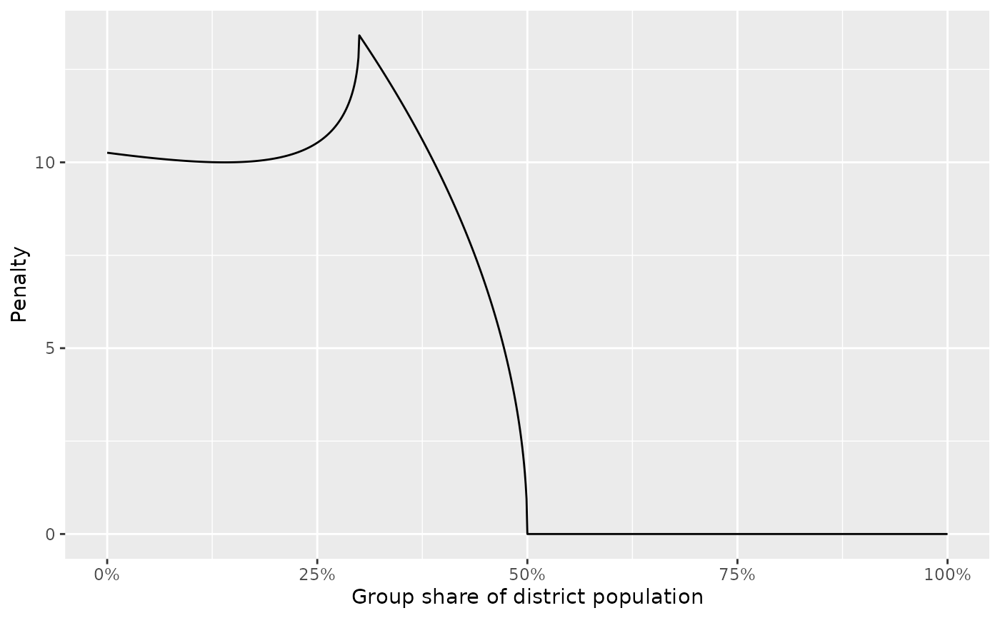

Plots the constraint strength versus some running variable. Currently
supports visualizing the grp_hinge, grp_inv_hinge, and grp_pow
constraints.
Arguments
- x
A redist_constr object.
- y
Ignored.
- type
What type of constraint to visualize. Currently supports only
"group", for visualizing constraint strength by group share.- xlim
Range of group shares to visualize.
- ...
additional arguments (ignored)
Examples
data(iowa)
iowa_map <- redist_map(iowa, existing_plan = cd_2010, pop_tol = 0.05)
constr <- redist_constr(iowa_map)
constr <- add_constr_grp_hinge(constr, strength = 30,
dem_08, tot_08, tgts_group = 0.5)
constr <- add_constr_grp_hinge(constr, strength = -20,
dem_08, tot_08, tgts_group = 0.3)
plot(constr)
